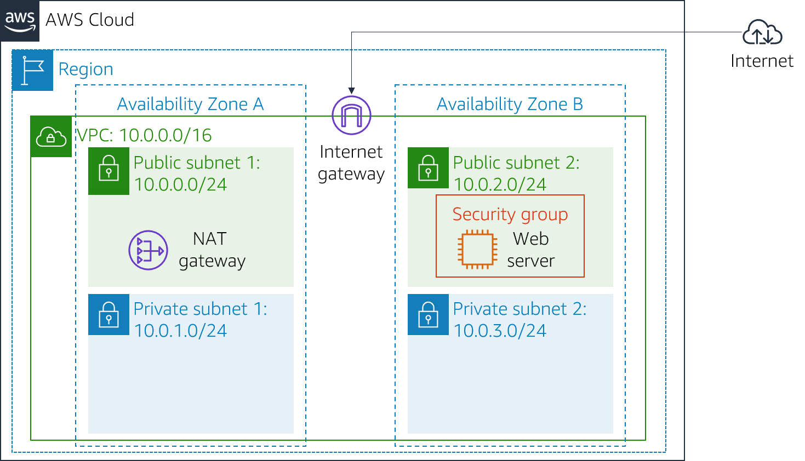
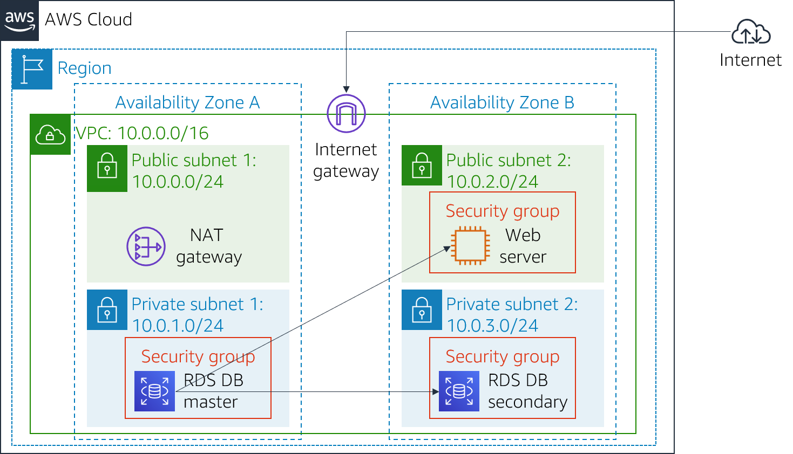

Versi 4.6.6 (TESS2)
Lab ini dirancang untuk memperkuat konsep memanfaatkan instans basis data yang dikelola AWS untuk menyelesaikan kebutuhan basis data relasional.
Amazon Relational Database Service (Amazon RDS) memudahkan penyiapan, pengoperasian, dan penskalaan basis data relasional di cloud. Layanan ini menyediakan kapasitas yang hemat biaya dan dapat diubah ukurannya sambil mengelola tugas administrasi basis data yang memakan waktu, sehingga Anda dapat berfokus pada aplikasi dan bisnis Anda. Amazon RDS memberi Anda enam opsi mesin basis data umum: Amazon Aurora, Oracle, Microsoft SQL Server, PostgreSQL, MySQL, dan MariaDB.
Tujuan
Setelah menyelesaikan lab ini, Anda dapat:
Durasi
Diperlukan sekitar 30 menit untuk menyelesaikan lab ini.
Skenario
Anda mulai dengan infrastruktur berikut: 
Di akhir lab, ini adalah infrastrukturnya:

Di bagian atas instruksi ini, klik Start Lab (Mulai Lab) untuk meluncurkan lab Anda.
Panel Mulai Lab terbuka dan menampilkan status lab.
Tunggu hingga Anda melihat pesan "Lab status: ready (Status lab: siap)", lalu klik X untuk menutup panel Mulai Lab.
Di bagian atas instruksi ini, klik AWS
Tindakan ini akan membuka AWS Management Console di tab browser baru. Anda akan masuk ke sistem secara otomatis.
Tips: Jika tab browser baru tidak terbuka, biasanya akan ada banner atau ikon di bagian atas browser Anda yang menunjukkan bahwa browser Anda mencegah situs membuka jendela pop-up. Klik banner atau ikon dan pilih "Allow pop ups" ("Izinkan pop up").
Atur tab AWS Management Console agar ditampilkan bersama instruksi ini. Idealnya, Anda akan dapat melihat kedua tab browser sekaligus, untuk mempermudah mengikuti langkah-langkah lab.
Dalam tugas ini, Anda akan membuat grup keamanan untuk mengizinkan server web Anda mengakses instans DB RDS Anda. Grup keamanan akan digunakan ketika Anda meluncurkan instans basis data.
Di AWS Management Console, pada menu Services (Layanan), klik VPC.
Di panel navigasi kiri, klik Security Groups (Grup Keamanan).
Klik Create security group (Buat grup keamanan), lalu konfigurasi:
DB Security Group (Grup Keamanan DB)Permit access from Web Security Group (Izinkan akses dari Grup Keamanan Web)Klik Create (Buat), lalu klik Close (Tutup)
Sekarang Anda akan menambahkan aturan ke grup keamanan untuk mengizinkan permintaan basis data masuk.
Pilih DB Security Group (Grup Keamanan DB).
Klik tab Inbound Rules (Aturan Masuk).
Grup keamanan saat ini tidak memiliki aturan. Anda akan menambahkan aturan untuk mengizinkan akses dari Web Security Group (Grup Keamanan Web).
sg, lalu pilih Web Security Group (Grup Keamanan Web).Ini mengonfigurasi Grup keamanan basis data untuk mengizinkan lalu lintas masuk pada port 3306 dari instans EC2 apa pun yang terkait dengan Web Security Group (Grup Keamanan Web).
Anda akan menggunakan grup keamanan ini ketika meluncurkan basis data Amazon RDS.
Dalam tugas ini, Anda akan membuat grup subnet DB yang digunakan untuk memberi tahu RDS subnet mana yang dapat digunakan untuk basis data. Setiap grup subnet DB memerlukan subnet dalam setidaknya dua Availability Zone.
Jika panel navigasi tidak terlihat, klik ikon menu di sudut kiri atas.
DB-Subnet-GroupDB Subnet Group (Grup Subnet DB)Subnet ini seharusnya sekarang ditampilkan di tabel Subnets selected (Subnet yang dipilih).
Anda akan menggunakan grup subnet DB ini ketika membuat basis data di tugas selanjutnya.
Dalam tugas ini, Anda akan mengonfigurasi dan meluncurkan instans basis data Amazon RDS for MySQL Multi-AZ.
Multi-AZ deployment Amazon RDS memberikan peningkatan ketersediaan dan daya tahan untuk instans Basis data (DB), menjadikan instans tersebut sesuai untuk beban kerja basis data produksi. Ketika Anda menyediakan Instans DB Multi-AZ, Amazon RDS secara otomatis membuat instans DB primer dan secara serentak mereplikasi data ke instans siaga di Availability Zone (AZ) yang berbeda.
Jika Anda melihat Switch to the new database creation flow (Alihkan ke alur pembuatan basis data baru) di bagian atas layar, silakan klik.
lab-dbmain (utama)lab-passwordlab-passwordlabIni akan menonaktifkan pencadangan, yang biasanya tidak disarankan, tetapi akan membuat basis data diterapkan dengan lebih cepat untuk lab ini.
Basis data Anda sekarang akan diluncurkan.
Jika Anda menerima kesalahan yang menyebutkan "not authorized to perform: iam:CreateRole" ("tidak diizinkan untuk menjalankan: iam:CreateRole", pastikan Anda menghapus centang Enable Enhanced monitoring (Aktifkan peningkatan pemantauan) di langkah sebelumnya.
Anda sekarang akan perlu menunggu sekitar 4 menit agar basis data tersedia. Proses deployment sedang men-deploy basis data dalam dua Availability zone yang berbeda.
Sambil menunggu, Anda mungkin ingin meninjau Amazon RDS FAQ atau menyeduh secangkir kopi.
Ini akan mirip dengan: lab-db.cggq8lhnxvnv.us-west-2.rds.amazonaws.com
Dalam tugas ini, Anda akan membuka aplikasi web yang berjalan pada server web Anda dan mengonfigurasinya untuk menggunakan basis data.
Aplikasi web akan ditampilkan, yang menunjukkan informasi tentang instans EC2.
Sekarang Anda akan mengonfigurasi aplikasi untuk terhubung ke basis data Anda.
labmain (utama)lab-passwordPesan akan muncul dan menjelaskan bahwa aplikasi sedang menjalankan perintah untuk menyalin informasi ke basis data. Setelah beberapa saat, aplikasi akan menampilkan Address Book (Buku Alamat).
Aplikasi Buku Alamat menggunakan basis data RDS untuk menyimpan informasi.
Data sedang disimpan ke basis data dan secara otomatis mereplikasi ke Availability Zone kedua.
Selamat! Anda telah menyelesaikan lab.
Panel akan muncul, menampilkan pesan "DELETE has been initiated... You may close this message box now" ("PENGHAPUSAN sudah dimulai... Anda dapat menutup kotak pesan ini sekarang".)
Untuk tanggapan, saran, atau koreksi, silakan kirim email kepada kami di: aws-course-feedback@amazon.com
Bootstrap v3.3.5 - [http://getbootstrap.com](http://getbootstrap.com "http://getbootstrap.com/")
Lisensi MIT (MIT)
Hak Cipta (c) 2011-2016 Twitter, Inc.
Dengan ini izin diberikan, secara gratis, kepada siapa pun yang memperoleh salinan perangkat lunak ini dan file dokumentasi terkait ("Perangkat Lunak"), untuk bertransaksi dengan Perangkat Lunak tanpa larangan, termasuk tanpa batasan pada hak untuk menggunakan, menyalin, memodifikasi, menggabungkan, memublikasikan, mendistribusikan, mensublisensikan, dan/atau menjual salinan Perangkat Lunak, dan untuk mengizinkan orang yang diberi Perangkat Lunak tersebut untuk melakukannya, tunduk pada ketentuan berikut:
Pemberitahuan hak cipta di atas dan pemberitahuan izin ini akan disertakan dalam semua salinan atau sebagian besar Perangkat Lunak.
PERANGKAT LUNAK DIBERIKAN "APA ADANYA", TANPA JAMINAN APA PUN, BAIK TERSURAT MAUPUN TERSIRAT, TERMASUK TETAPI TIDAK TERBATAS PADA JAMINAN YANG DAPAT DIPERDAGANGKAN, KESESUAIAN UNTUK TUJUAN DAN NONPELANGGARAN TERTENTU. DALAM KEADAAN APA PUN PENULIS ATAU PEMEGANG HAK CIPTA TIDAK BERTANGGUNG JAWAB ATAS KLAIM, KERUSAKAN, ATAU TANGGUNG JAWAB LAINNYA, BAIK DALAM TINDAKAN KONTRAK, KESALAHAN, MAUPUN SEBALIKNYA, YANG TIMBUL DARI, AKIBAT, ATAU SEHUBUNGAN DENGAN PERANGKAT LUNAK ATAU PENGGUNAAN ATAU PUN TRANSAKSI LAIN DALAM PERANGKAT LUNAK.